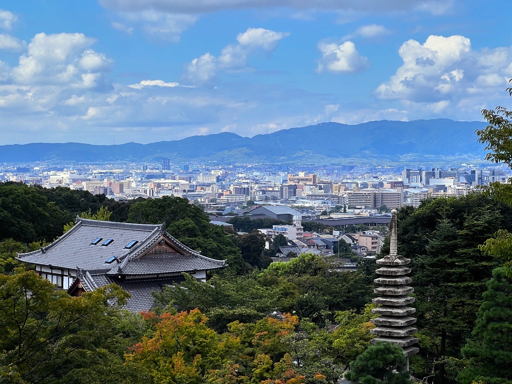
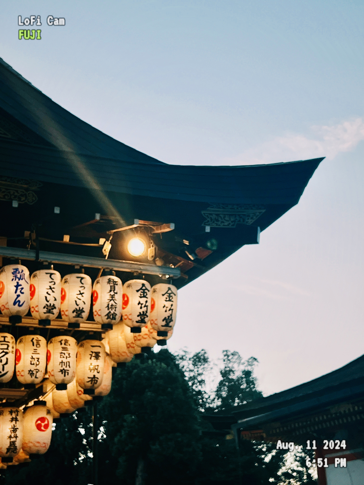
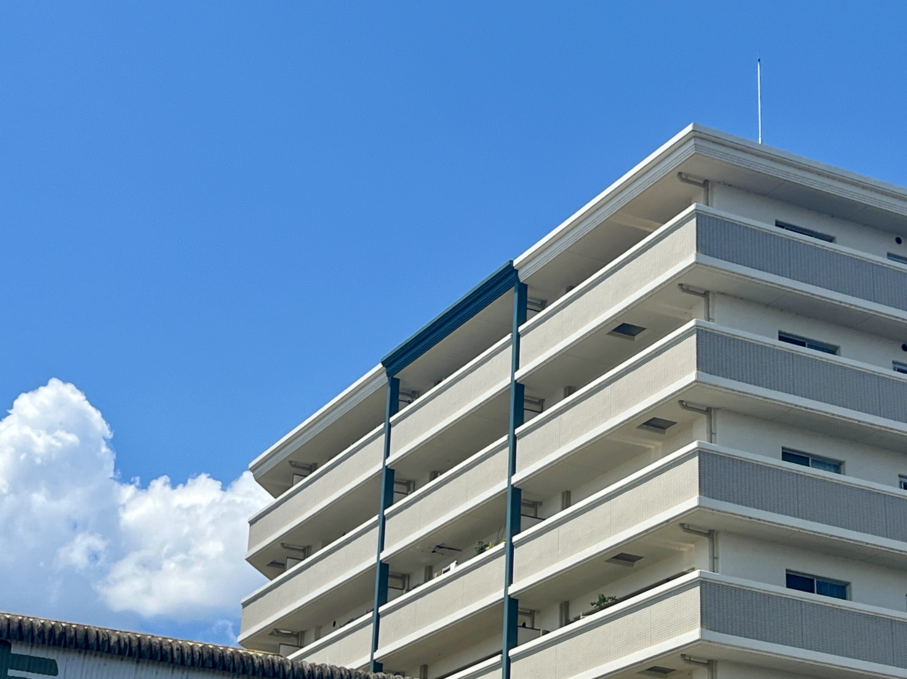

《清水寺的音羽之瀧》
音羽之瀧象徵著淨化與希望，三條水流代表學業、健康與長壽。
透過捕捉這個場景，表現出人們對生活願景的追求與信仰。
《遠離喧囂》
作品以遠眺寺院與山景為主題，透過廣闊的天空與自然環境，
傳遞出遠離都市繁囂、追求心靈寧靜的意境。


《祈願之燈》
燈籠代表人們心中的祈願與信念，夜晚燈光點亮的不僅是寺廟，
更是眾人心中對未來的期盼與祝福。
《晴空下的棲息地》
住宅建築在藍天背景的襯托下，象徵著人們對理想生活的追求與希望。
乾淨的線條與明亮的天空營造出舒適與安全感。
